CS184/284A Spring 2025 Homework 2 Write-Up
Link to webpage: cal-cs184.github.io/hw-webpages-su25-yllivct/hw1
Link to GitHub repository: github.com/cal-cs184/hw2-meshedit-114514184hw2

Overview
In this homework, I implement geometric modeling by operating triangle meshes. In the first section, I use Casteljau algorithm to generate Bezier curves and surfaces. In this way, I turn figures into mesh models. In the second section, I implement shading, edge operations and loop subdivision.Section I: Bezier Curves and Surfaces
Part 1: Bezier curves with 1D de Casteljau subdivision
About 1D de Casteljau algorithm: It calculates the Bezier curve by recursively generating lists of points using linear interpolation.For control points \(p_1,p_2,\dots,p_n\) and \(t\in [0,1]\), it generates \(p_1',p_2',\dots,p_{n-1}'\), where \(p_i'=(1-t)p_i+p_{i+1}\). Repeat this step until there's only one point left. This point belongs to he Bezier curve at the given parameter \(t\).
For my code, since I only need to do one step in
BezierCurve::evaluateStep, I just create a new vector<Vector3D>, push_back (1 - t) * points[i] + t * points[i + 1] and return it.
Screenshots of each step of the evaluation:
|
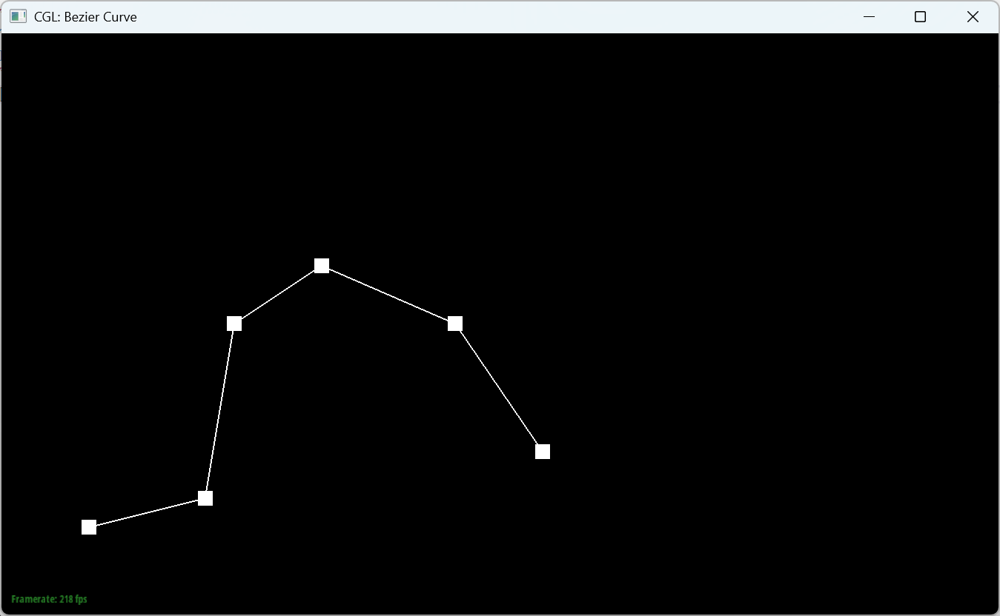
|
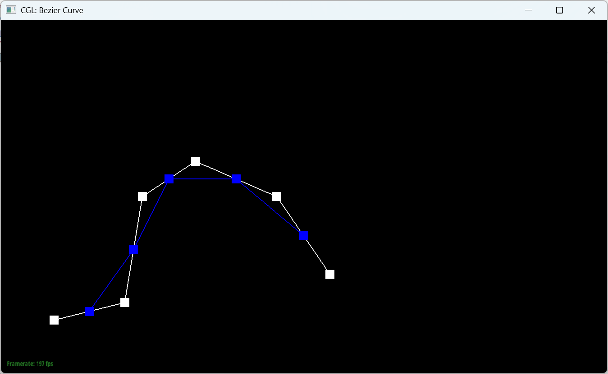
|
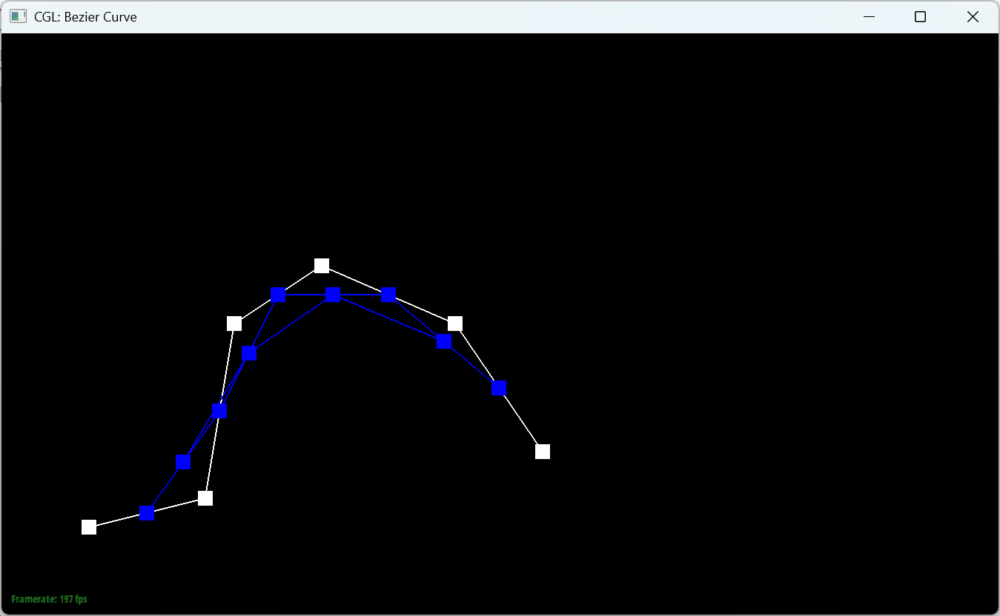
|
|
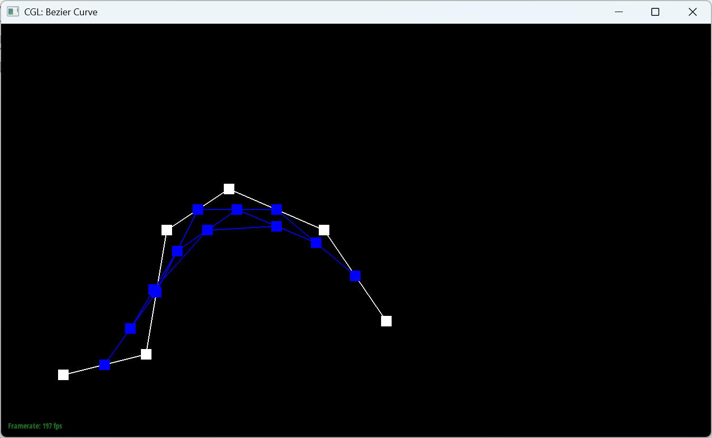
|
|
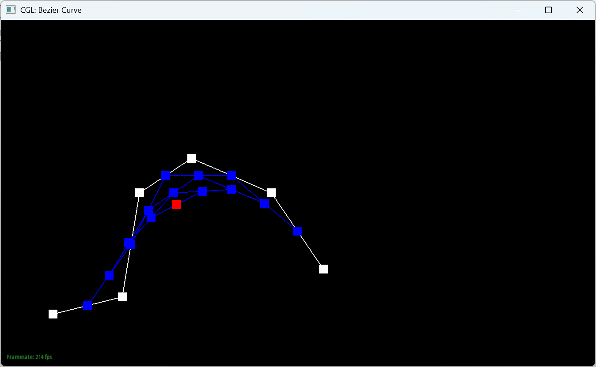
|
|
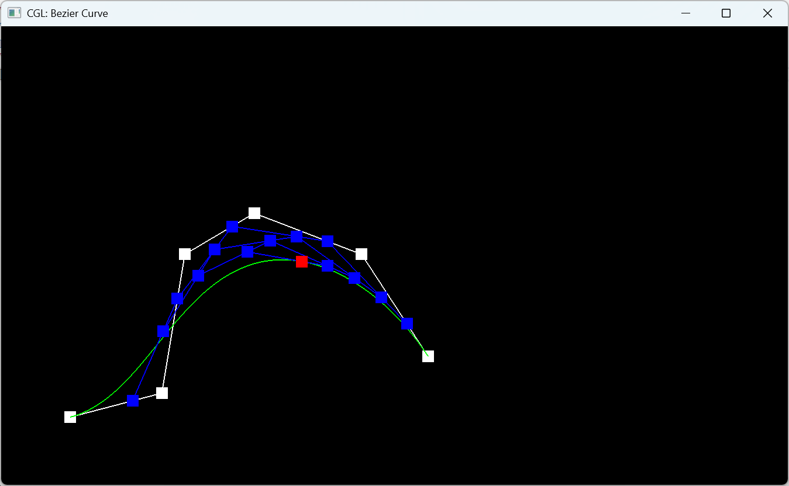
|
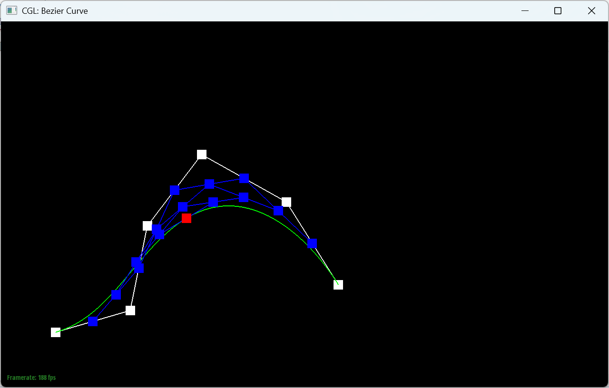
|
Part 2: Bezier surfaces with separable 1D de Casteljau
How de Casteljau algorithm extends to Bezier surfaces: First, for each row of control points, apply the 1D de Casteljau algorithm to compute intermediate points. This yields m intermediate points. Then apply the 1D de Casteljau algorithm to the m intermediate points to compute the final surface point at (u,v).For my code, I use three functions:
evaluateStep,evaluate1D,evaluate. The first two are almost the same as task 1, calculating the Bezier curve points by recursively using lerp. For the last function, I first use evaluate1D to generate intermediate points for each row at parameter u. Then I use this list of points to generate the final surface point at parameter v. Section II: Triangle Meshes and Half-Edge Data Structure
Part 3: Area-weighted vertex normals
How to get the area-weighted vertex normals:By the definition of area-weighted vertex normal, to calculate it, I have to get the normal of each face, weight its normal by its area, then normalize the sum of all area-weighted normals.
But actually we don't need to do so many steps. Assume that for vertex v, \(\vec{\alpha},\vec{\beta}\) from v determines a face f, which is a triangle. to get the normal of f, we have to calculate the cross product of \(\vec{\alpha}\) and \(\vec{\beta}\), let's call it \(\gamma\). Surprisingly, we find out that the length of \(\gamma\) is twice the area of f. Therefore, all we have to do is calculate all the cross products, sum them all up, and normalize the result.
Here, since the half-edges are counter-clockwise, we have to negate the result to make it outward.
|
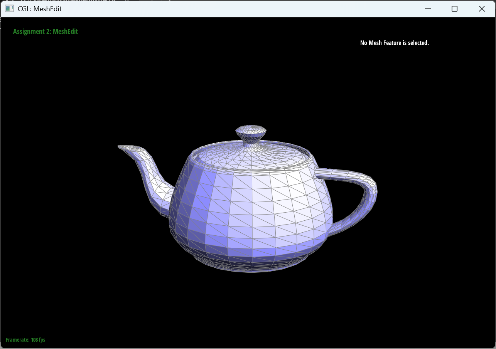
|
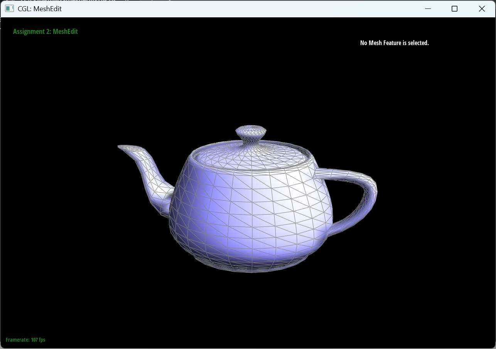
|
Part 4: Edge flip
How I implement the edge flip operation:|
|
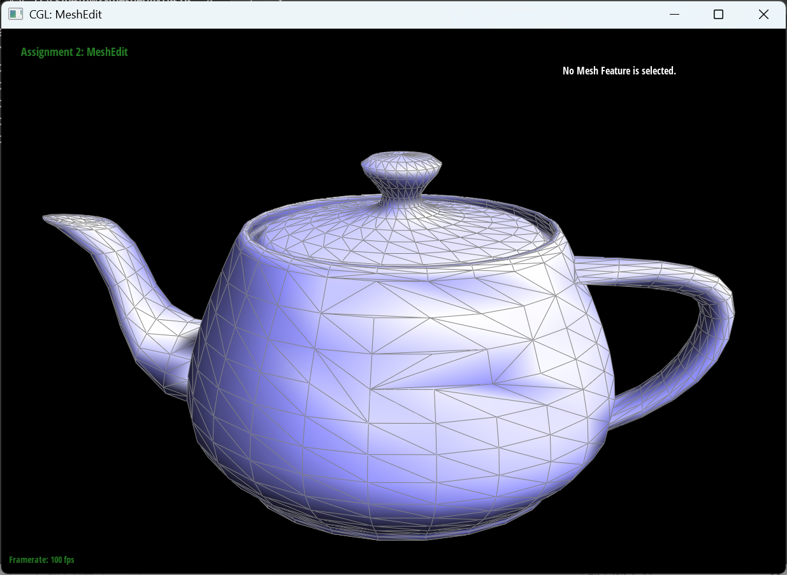
|
Part 5 Edge Split
Implementation
I implemented "HalfedgeMesh::splitEdge" by mirroring the textbook four-triangle diagram around the original edge(b-c).
Collect the old one-ring
I first cache the six half-edges that form the two adjacent triangles. From them I obtain the four old vertices a, b, c, d and the two old faces f0, f1.
Create new elements
One vertex m at the midpoint, three new edges(a-m, m-d, m-c), six new half-edges, and two new faces. I reuse the original edge object for b-m so that external pointers remain valid.
Wire the half-edges
- Pair every new half-edge with its twin and assign the correct edge pointer.
- Walk around each of the four triangles and call setNeighbors(next, twin, vertex, edge, face) on every half-edge so that each face forms a closed 3-step cycle.
- Update all owner pointers: face->halfedge, edge->halfedge, vertex->halfedge.
Mark new vs. old
According to Loop-subdivision rules, only the cross edges a-m and m-d are flagged isNew=true; the two segments that still lie on the original edge(b-m, m-c) stay false
Return value
The function returns the new vertex iterator. By convention vM->halfedge is set to the old half-edge now representing b→m so that later traversal starts along the split edge.
|
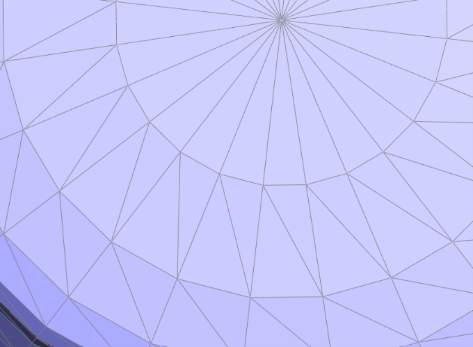
|
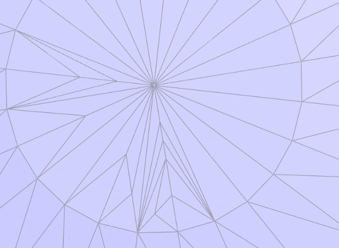
|
|
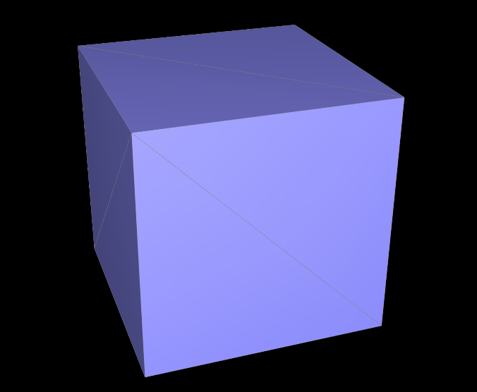
|
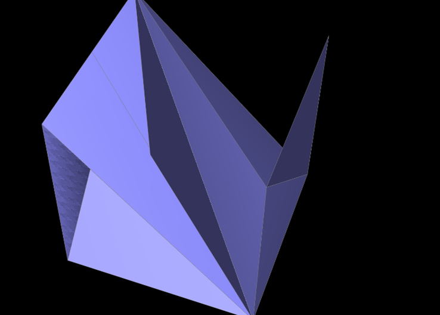
|
Part 6 Loop subdivision
Weight pass
For each vertex
u=(valence==3)\,?\,3.0/16.0:3.0/(8.0*valence)
newPosition=(1-valence\cdot u)\cdot P+u\cdot(\text{sum of neighbor positions})
For each original edge
newPosition=0.375\cdot(A+B)+0.125\cdot(C+D)
where A, B are the edge endpoints and C, D are the two opposite vertices of the adjacent triangles. All results go into the temporary fields Vertex::newPosition and Edge::newPosition; nothing is written to Vertex::position yet.
Split pass
I first copy all original EdgeIter into a vector so that the loop is not confused by new edges created during splitting. For every edge in that list I call
VertexIter mid = mesh.splitEdge(edge); mid->newPosition = edge->newPosition; mid->isNew = true;
Inside splitEdge I already mark the cross edges(a-m and m-d) as isNew=true and keep the two pieces that still lie on the old line(b-m, m-c) isNew=false
Flip pass
For every edge in the mesh:
if(edge.isNew == true) {
bool aNew = edge.halfedge->vertex->isNew;
bool bNew = edge.halfedge->twin->vertex->isNew;
if(aNew != bNew) mesh.flipEdge(edge);
}
In words: flip only those new edges whose two ends are "one new, one old"
Commit pass
Finally copy each vertex's newPosition into position:
for all vertices v->position = v->newPosition;
Behavior of the geometry
Every sharp corner and long straight edge rounds off rapidly. One Loop pass bevels the cube, two passes produce a smoothed cube, four passes approach a sphere.
If I manually pre-split an edge before the first Loop pass, that ridge keeps its shape one subdivision longer, because the two short edges created by the split are pulled less strongly.
|
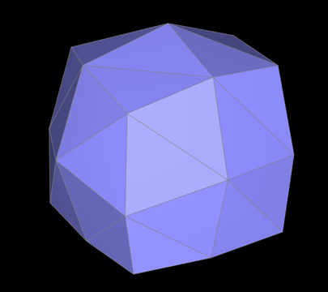
|
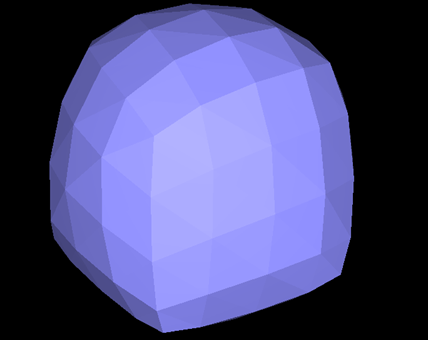
|
|
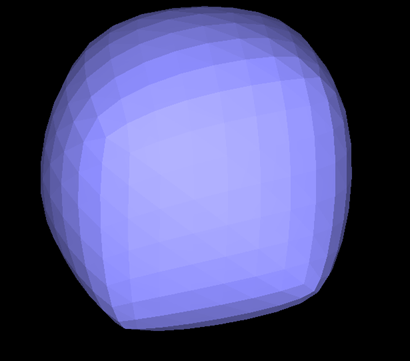
|
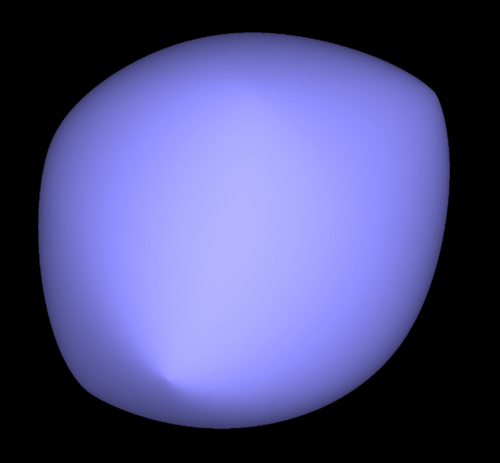
|
Why the stock cube becomes asymmetric
Loop Subdivision Requires Triangles: The Loop subdivision algorithm is defined explicitly for triangle meshes, splitting each triangle into four smaller ones.
Cubes Have Quadrilateral Faces: A standard 3D cube model has 6 quadrilateral(quad) faces. To use Loop subdivision, these quad faces must first be converted into triangles.
The Arbitrary Diagonal: The standard way to triangulate a quad is to split it into two triangles by adding an edge along one of its two diagonals. When loading cube.dae, the software must make an arbitrary choice for each face: which diagonal to use.
Symmetry is Broken: This choice creates a "grain" in the mesh where the underlying topology is no longer symmetric, even if vertex positions are symmetric.
Impact on Subdivision Rules: This asymmetric topology impacts vertex updates:
- Old Vertex Update: The rule $$(1-n\cdot u)\cdot original\_position + u\cdot original\_neighbor\_position\_sum$$ pulls vertices asymmetrically due to biased neighbor distribution
- New Vertex Update: The rule $$0.375\cdot(A+B)+0.125\cdot(C+D)$$ generates asymmetric placements due to inconsistent choices for opposite vertices (C, D)
The result is amplified asymmetry with each subdivision step, causing skewed distortion instead of symmetric convergence to a sphere.
Split the diagonal first
This new topology is perfectly symmetric, which resolves the issues seen before:
Symmetric Neighborhoods: Every original corner vertex connects symmetrically to three face-center vertices.
Consistent Vertex Updates: Symmetric neighborhoods ensure even pulling toward the center during position calculations.
Uniform Convergence: The symmetric foundation enables uniform refinement through subdivision iterations, producing high-quality spherical convergence.